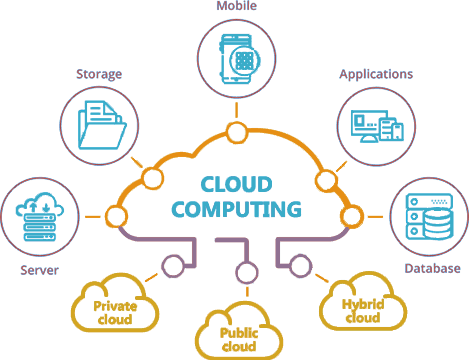

IaaS
Infrastructure as a Service
The provider gives you virtual machines, storage and networks. You install and manage the operating system and software yourself.
Example: Amazon EC2
Phan Vu Bao Nguyen — 24110113
Course: Introduction to Cloud Computing — Lab 01

I'm learning how modern applications are built and run on the internet. This page is my first project in the course: a static website.
Cloud computing is a model for delivering computing resources over the internet on an on-demand basis. These resources include physical or virtual servers, data storage, networking, application development tools, software, AI-powered data analytics platforms, and various other services. Users can access these resources flexibly, with costs determined by actual usage or through monthly subscription plans. Cloud computing functions by virtualizing resources from physical servers, distributing and automatically allocating them as needed; users access these resources via the internet, and security is managed under a shared responsibility model.
Cloud services are usually grouped into three models, depending on how much the provider manages for you.
Infrastructure as a Service
The provider gives you virtual machines, storage and networks. You install and manage the operating system and software yourself.
Example: Amazon EC2
Platform as a Service
The provider manages the servers and the runtime. You only upload your code and configure your application.
Example: Google App Engine
Software as a Service
The provider delivers a complete application through the browser. You simply sign in and use it.
Example: Google Docs